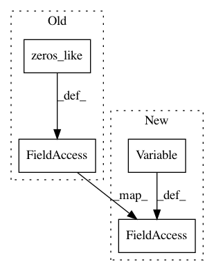

3726cbf67234cff64ff9f7299c6e28f500de1239,hypergan/train_hooks/gp_sn_memory_train_hook.py,GpSnMemoryTrainHook,__init__,#GpSnMemoryTrainHook#Any#Any#Any#Any#Any#Any#,19
Before Change
self.memory_size = memory_size
self.top_k = top_k
self.current = tf.Variable(tf.zeros_like(self.gan.inputs.x))
d = self.gan.create_component(self.gan.config.discriminator, name="discriminator", input=self.current, features=[tf.zeros_like(self.gan.encoder.sample)], reuse=True)
self.assign_current = [ self.current.assign(self.s_max[i]) for i in range(memory_size) ]
gd = tf.gradients(d.sample, [self.current])[0]
After Change
self.memory_size = memory_size
self.top_k = top_k
self.current = tf.Variable(tf.zeros_like(gan_inputs))
d = self.gan.create_component(self.gan.config.discriminator, name="discriminator", input=self.current, features=[tf.zeros_like(encoder_sample)], reuse=True)
self.assign_current = [ self.current.assign(self.s_max[i]) for i in range(memory_size) ]
gd = tf.gradients(d.sample, [self.current])[0]
self.d_loss = tf.reduce_mean(tf.square(tf.norm(gd, ord=2)))
In pattern: SUPERPATTERN
Frequency: 3
Non-data size: 4
Instances
Project Name: HyperGAN/HyperGAN
Commit Name: 3726cbf67234cff64ff9f7299c6e28f500de1239
Time: 2018-11-23
Author: martyn@255bits.com
File Name: hypergan/train_hooks/gp_sn_memory_train_hook.py
Class Name: GpSnMemoryTrainHook
Method Name: __init__
Project Name: NeuromorphicProcessorProject/snn_toolbox
Commit Name: cffd5df804e8c1405adfc6616bad2253fe5825b0
Time: 2020-05-02
Author: bodo.rueckauer@gmail.com
File Name: snntoolbox/simulation/backends/inisim/ttfs_dyn_thresh.py
Class Name: SpikeConv2D
Method Name: build
Project Name: NeuromorphicProcessorProject/snn_toolbox
Commit Name: cffd5df804e8c1405adfc6616bad2253fe5825b0
Time: 2020-05-02
Author: bodo.rueckauer@gmail.com
File Name: snntoolbox/simulation/backends/inisim/ttfs_dyn_thresh.py
Class Name: SpikeDense
Method Name: build